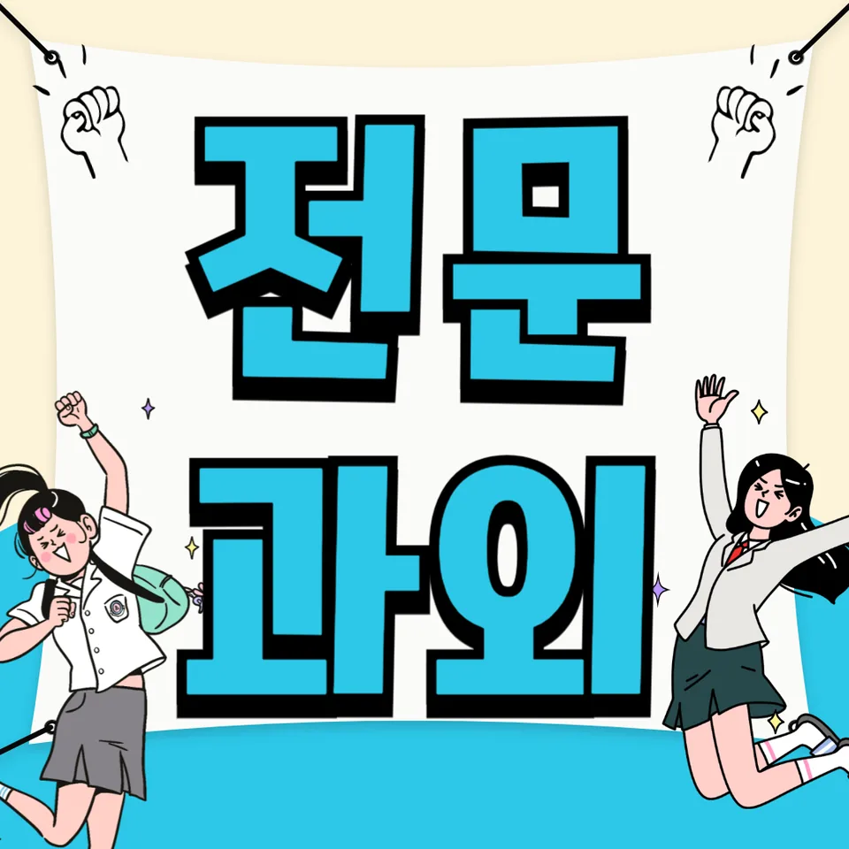

PageType : CITY
URL : /경기도과외/부천시과외/
지역 학습환경과 학생들의 변화
부천시과외를 시작하는 학생들 중에는 ‘학교 진도는 따라가는데 왜 성적이 안 오르는지’부터 답을 찾으려는 경우가 많습니다. 같은 반에서도 공부 습관의 결이 달라지면 수업 이해 속도와 복습 방식이 달라지고, 자연스럽게 시험 결과의 폭이 커집니다. 부천의 학습 환경은 학원 정보가 빠르게 공유되는 편이라 학생들이 비교에 휩쓸리기 쉽지만, 대신 정규 수업과 연계해 공부 흐름을 잡아주면 변화가 빨라집니다. 특히 부천시과외에서는 ‘오늘 한 범위를 내일 어떻게 남길지’를 먼저 정리해, 학습 태도가 흔들리지 않게 만드는 데 초점을 둡니다.
처음엔 과제 제출만 겨우 챙기던 학생이 일정표를 보고도 멈칫하는 순간이 생깁니다. 그때 부천시과외는 공부 방법을 외우게 하기보다, 학생이 스스로 판단할 수 있게 체크 기준을 작게 나눕니다. 문제 풀이 시간을 늘리는 게 아니라, 틀린 유형을 기록하고 다음 학습에서 어떤 선택을 할지 연결해 줍니다.
학부모가 많이 고민하는 부분
학부모들이 가장 자주 묻는 질문은 ‘우리 아이가 왜 공부를 시작하지 못할까’입니다. 부천시과외 상담에서도 계획을 세워도 실행이 끊기는 학생이 눈에 띄는데, 대개 이유는 공부 의지 부족이 아니라 자기 페이스가 아직 서지 않았기 때문입니다. 학교 생활이 끝난 뒤 피로가 남아 있는 날, 어떤 순서로 책상에 앉는지가 달라지면 내신 대비가 흔들립니다. 그래서 부천시과외에서는 가정에서의 시간을 ‘학습 루틴’으로 바꿔주는 방식으로 지도 방향을 정합니다.
또 다른 고민은 과목별 편차입니다. 국어는 괜찮아 보이는데 수학에서 점수가 멈춘다든지, 영어 단어는 외우는 듯하지만 시험에서 읽기가 막힌다든지의 차이가 생깁니다. 이럴 때 학부모가 원하는 건 당장의 점수라기보다, 다음 시험까지 이어지는 학습 태도와 점검 방식의 정착입니다.
학년이 올라갈수록 달라지는 공부
학년이 올라갈수록 같은 방식의 공부가 통하지 않는 순간이 옵니다. 중간고사와 기말고사가 반복되는 것 같아도, 난이도와 출제 의도는 계속 바뀌기 때문입니다. 부천시과외를 받는 학생들은 1~2학년 때는 ‘문제 수’에 집중하다가, 어느 시점부터는 ‘개념-적용-복습’의 순서가 더 중요해졌다는 걸 체감합니다. 그래서 학년 변화에 맞춰 과목 선택과 공부 계획을 조정하고, 공부 습관도 시험 중심으로 재정렬합니다.
고학년으로 갈수록 시험 기간 운영이 성패를 가릅니다. 하루에 몇 시간을 하느냐보다, 시간관리 안에서 어떤 단계를 먼저 처리하는지가 결과로 연결됩니다. 부천시과외에서는 시험 전 주간의 흐름을 미리 시뮬레이션해, 학생이 당일에 흔들리지 않도록 준비 과정을 설계합니다.
학교생활과 내신 준비
내신은 ‘이해한 만큼’만 오르는 것이 아니라 ‘수업 이후에 남긴 만큼’ 오릅니다. 학교생활 속에서 들은 내용을 바로 정리하지 않으면, 시험이 다가올수록 복습 시간이 감당되지 않게 됩니다. 부천시과외는 수업 직후의 정리 습관을 만들면서도, 학교에서 실제로 어떻게 서술형이 구성되는지 학생 상황에 맞춰 대응합니다. 수업 진도표를 참고해 학습량을 조절하고, 내신 준비가 불필요한 과잉 문제풀이로 번지지 않게 잡아줍니다.
특히 수업 중 필기 자체가 잘 되어 있어 보이는 학생도 시험에서 감점을 받는 일이 있습니다. 이런 경우엔 필기의 ‘질’이 문제입니다. 핵심 개념을 표시하는 방식, 예시를 어떻게 연결했는지, 틀린 문제를 어떤 언어로 다시 설명할지 같은 부분을 부천시과외에서 점검하며, 학교생활과 내신 준비를 한 흐름으로 묶습니다.
자기주도학습이 중요한 이유
자기주도학습은 의지가 강한 학생만 하는 것이 아닙니다. 계획을 지키는 힘은 ‘규칙을 이해하는 능력’에서 나오기 때문에, 시작 단계에서 구조가 필요합니다. 부천시과외에서는 자기주도학습을 거창한 목표로 만들지 않고, 학생이 매일 판단할 수 있는 행동 단위로 쪼갭니다. 예를 들어 “오늘은 개념 확인 20분, 문제 15개, 오답 정리 10분”처럼 끝점이 명확해야 시간이 늘어나도 흐트러지지 않습니다.
또한 자기주도학습은 공부 태도의 변화와 직결됩니다. 수업 내용을 그대로 두는 날과, 한 번이라도 자기 언어로 요약하는 날의 차이는 시험 전날에 크게 벌어집니다. 부천시과외는 학생이 스스로 ‘무엇이 부족한지’를 말할 수 있게 질문을 설계하고, 그 답을 바탕으로 다음 학습 계획을 갱신합니다.
공부 습관이 성적에 미치는 영향
성적은 재능보다 패턴에서 먼저 결정되는 경우가 많습니다. 같은 실수도 반복되는 학생은 오답을 기록하더라도 다시 확인하지 않기 때문에, 시험이 올 때마다 같은 구간에서 점수가 새어 나갑니다. 반대로 부천시과외를 통해 공부 습관이 자리 잡은 학생은 틀린 문제를 ‘왜 틀렸는지’로 되짚고, 다음 학습에서 적용할 기준을 정합니다. 이런 작은 변화가 누적되면서, 서서히 성적이 올라가는 흐름이 보입니다.
시간관리 역시 습관의 일부입니다. 집중이 잘 되는 시간대를 찾아두면 같은 시간을 해도 효율이 달라지고, 공부 집중이 깨지는 순간에 대비할 루틴도 생깁니다. 학생이 “공부가 싫다”라고 말할 때 사실은 “시작이 어렵다”인 경우가 많아서, 부천시과외는 시작 장벽을 낮추는 방식으로 학습 태도를 다듬습니다.
체크해야 할 학습 포인트
- 수업 직후 10~15분 정리: 오늘 개념과 예시를 한 문장으로 남겼는지
- 오답 기록 방식 점검: 틀린 이유를 ‘개념/계산/독해’로 분류했는지
- 시험 전 시간관리: 주차별 복습 순서와 분량이 계획대로 흘렀는지
- 과목 선택 우선순위: 점수 보정이 필요한 과목부터 먼저 다뤘는지
위 항목이 고정되면 시험 기간에도 무너지지 않습니다. 부천시과외에서는 학생의 하루를 관찰해, 실제로 체크가 작동하는지 확인하고 다음 주 조정안을 빠르게 반영합니다.
부천시과외로 잡는 공부 흐름과 과목 선택
부천시과외를 통해 가장 먼저 정리하는 것은 과목별 흐름입니다. 국어는 독해 습관과 서술형 대응이 함께 가야 하고, 수학은 개념 누락이 생기는 순간부터 흔들립니다. 영어는 단어 암기만으로는 부족해지고, 문장 구조를 읽는 연습과 시험형 문제풀이를 연결해야 점수가 움직입니다. 그래서 과목 선택은 ‘좋아하는 과목’이 아니라 ‘성적이 가장 빨리 회복될 과목’부터 시작하는 편이 유리합니다.
학습 계획은 학생의 시험 일정과 수업 난이도를 동시에 반영해야 합니다. 같은 문제집을 하더라도 언제, 어떤 순서로 풀었는지에 따라 결과가 달라지기 때문에, 부천시과외는 주간 목표를 세우고 수행을 점검해 다음 단계로 자연스럽게 넘어가게 합니다. 그 과정에서 학생은 자기주도학습에 대한 두려움이 줄고, 공부 계획을 스스로 조정하는 힘을 얻게 됩니다.
자주 묻는 질문
부천시과외는 어떤 학생에게 가장 도움이 되나요?
수업은 듣는데 복습이 부족하거나, 시험 직전에 공부가 몰리며 내신이 흔들리는 학생에게 특히 효과적입니다. 또한 공부 습관이 잡히지 않아 계획이 자주 끊기는 경우에도 방향을 빠르게 잡아줍니다.
내신 준비는 어떻게 시작하는 게 좋을까요?
범위를 크게 잡기보다 수업 직후 정리와 오답 기록부터 시작하는 편이 좋습니다. 부천시과외에서는 학교생활 흐름을 기준으로 내신 준비 루틴을 만들고, 시험 전 주간 운영이 가능하도록 조정합니다.
자기주도학습이 잘 안 되는 이유는 무엇인가요?
의지 부족이라기보다 판단 기준이 없어서 생깁니다. 무엇을 먼저 하고, 어떤 기록을 남겨야 하는지 기준이 정해지면 실행력이 올라가며 부천시과외에서도 체크 방식으로 정착을 돕습니다.
시험 기간에는 하루 공부 시간을 늘리면 효과가 있나요?
시간을 늘려도 순서가 틀리면 효과가 줄어듭니다. 집중이 깨지는 구간을 고려해 복습·오답·새 문제를 배치하고, 실제로 시험형 답안 작성까지 연결되는지 점검해야 합니다.
과목 편차가 큰데 순서를 어떻게 잡아야 하나요?
점수가 떨어지는 과목을 방치하면 다음 학기에 더 커질 수 있습니다. 부천시과외에서는 과목 선택을 ‘회복 속도’ 기준으로 우선순위를 잡고, 개념-적용-복습 연결이 되도록 계획을 조정합니다.
